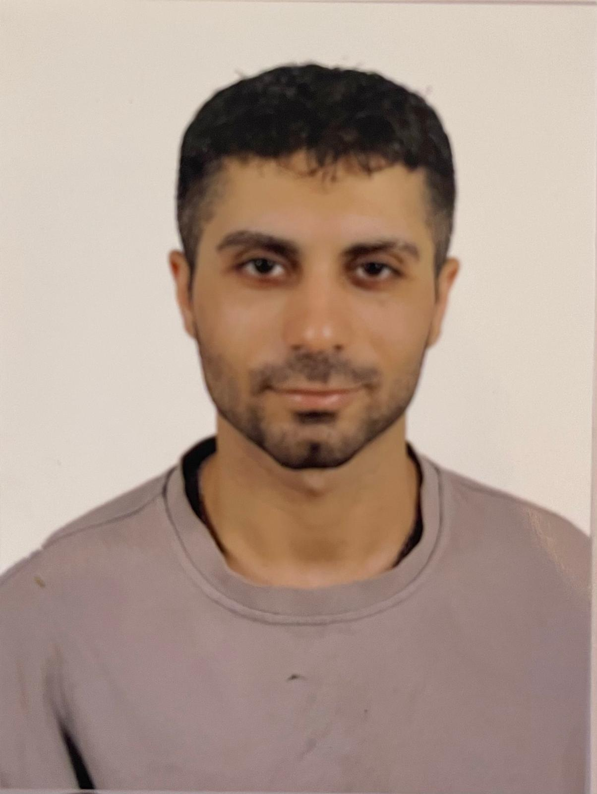

Yusuf Can Günel

Student number: 20211024
Department: Computer Engineering
University: Near East University
About Me
My name is Yusuf Can and I am a Computer Engineering student. I am passionate about
technology, software development, and cybersecurity. I enjoy learning new programming
languages and improving my technical skills.
Technical Skills
- Programming Languages: C, C++, Java
- Web Development: HTML, CSS
- Object-Oriented Programming (OOP)
- Basic Database Knowledge
- Basic Networking Concepts
- Git (Version Control – fundamental usage)
Homeworks
Projects
- Console-based applications using C and Java
- Personal static website using HTML and CSS
- Basic data structures and algorithms in academic projects
Hobbies
Professional Interests
- Web and Mobile Application Development
- Artificial Intelligence
- Cybersecurity
- Embedded Systems & IoT
- Cloud Computing